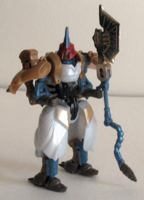

Prowl
Prowl
Allegiance : Minicon
Size : Mini-Con
Difficulty of Transformation : Very Easy
Color Scheme : Dark maroon, charcoal black, greyish white, and some metallic gold, yellowish white, dull yellowish gold, and red
Rating : 6.5
Magna
Stampede & Stockade w/ Prowl and Terradive
Price
: $20 (U.S.)
Prowl
Allegiance
: Minicon
Size
: Mini-Con
Difficulty of Transformation
: Very
Easy
Color Scheme
: Dark maroon, charcoal
black, greyish white, and some metallic gold, yellowish white, dull yellowish
gold, and red
Rating
: 6.5
(NOTE: Because this is a repaint, this is not a full-blown review. This mainly covers any changes made to the mold and the color scheme, and merely compares it to Armada Prowl. For a review on the mold itself, read the review of Armada Prowl here .)
Yay! Another Universe
Prowl! Well, that aside, this is a pretty cool redeco. Granted, the paint
job doesn't even resemble that of a police car, but it's still pretty cool
in its own way, and it's original to boot. The gray and dark reddish brown
are used in just the right amounts, and Prowl actually has an extra paint
app or two when compared to his previous versions. The racing "V"-stripe
down the hood is especially cool, and if I don't know better, I'd say he's
the first Universe Minicon to have Energon Radiation... Eh, probably wasn't
intended to be that way, though. Like nearly all the times the charcoal
black color is used, though, I think a more solid black would have suited
Prowl better. I'd say that out of Prowl's three decoes so far, this is
my favorite by a hair.
No mold changes have
been made to Prowl. (He and the other Minicon in this 4-pack, Terradive,
still can transform into their weapon modes- they're just not pictured
here, both for simplicity's sake and to conserve precious web space.)
Terradive
Allegiance
: Minicon
Size
: Mini-Con
Difficulty of Transformation
: Easy
Color Scheme
: White, black, and
some metallic gold, metallic bluish silver, and bright orange
Rating
: 7.7
(NOTE: Because this is a repaint, this is not a full-blown review. This mainly covers any changes made to the mold and the color scheme, and merely compares it to Armada Terradive. For a review on the mold itself, read the review of Armada Terradive here .)
This version of Terradive
is quite a nice redeco, just like the other Mini-Con in this pack, and
quite different from either of his previous versions. He's now a less "evil"
white color, with some black and bluish silver mixed in for good measure.
He's also got some bright orange highlights here and there, but since they're
not used too much, they look okay. Perhaps bright green would've worked
slightly better, but it's still a good paint choice. I would've preferred
a few more paint apps on Terradive to break up all the white, though, considering
that the individual components of this 4-pack don't quite add up to $20,
so I think it wouldn't have been asking too much to have Hasbro forward
the extra couple bucks to a few extra paint apps for each Transformer.
Terradive's overall scheme is still nice, but I don't think it quite measures
up to the black-and-blue of the original.
No mold changes have
been made to Terradive.
 Magna
Stampede
Magna
Stampede

Allegiance
: Autobot
Size
: Basic
Difficulty of Transformation
: Medium
Color Scheme
: Pearly white, dull
blue, goldish tan, and some black, brownish gray, metallic gold, dull red,
light blue, bronze, bright green, and metallic bluish silver
Rating
: 9.4
(NOTE: Because this is a repaint, this is not a full-blown review. This mainly covers any changes made to the mold and the color scheme, and merely compares it to Battle Unicorn. For a review on the mold itself, read the review of Battle Unicorn here .)
Magna Stampede (AWESOME
name) was a good choice for a Universe figure, seeing as how his predecessor,
Battle Unicorn, got VERY poor distribution. So this will be the first time
many fans will be able to pick this great mold up. Magna Stampede's color
scheme in beast mode highly resembles that of a zebra (the stripes are,
I assume, his "Energon radiation" pattern), and his overall color scheme
is well-put-together and very fitting. The pearly white looks lovely on
an animal such as this, and the blue, gray, and tan really complement it
nicely. As you can especially tell in robot mode, Magna Stampede has a
ton of colors on him that are used in only one place and never again- something
that shows that a lot of care went into his paint job, I think. I also
agree with decision to remove his transparent plastic, as I've never been
a fan of transparent plastic being part of the main body of a transformer
as it was on Battle Unicorn. The chrome on his mane-axe has also been removed,
and a worn gold-black pattern has taken its place. Even though it's not
quite as pretty, it definitely won't have any chipping problems, so that's
a plus. Overall, Magna Stampede is a great repaint of a great mold, and
the star of this 4-pack.
No mold changes have
been made to Magna Stampede. The shoulder panels on mine fall off even
EASIER than they did on Battle Unicorn, but this may just be my toy...
 Stockade
Stockade
Allegiance
: Autobot
Size
: Basic
Difficulty of Transformation
: Medium
Color Scheme
: Brownish gray, dark
maroon, dull orangish yellow, and some silver-gold, dull milky tan, black,
and red
Rating
: 7.8
(NOTE: Because this is a repaint, this is not a full-blown review. This mainly covers any changes made to the mold and the color scheme, and merely compares it to Tank Drone. For a review on the mold itself, read the review of Tank Drone here .)
Okay, don't get me wrong,
I really like the Tank Drone/Stockade mold. It's a good toy all around.
But the color scheme on Stockade just seems so random and unfitting for
a tank. The maroon and yellow really clash, and that odd milky tan used
only for his chest seems rather odd as well. The gray itself looks nice
on this mold, but that's about the only fitting main color on Stockade.
One other, more minor, color, I like on Stockade is the rather unique paint
color used for the end of his shoulder cannon- it's both silver and gold
at the same time, and looks pretty nice. Stockade has unique black patterns
on his shoulder plates that look pretty cool (although they look too uniform
to be Energon Radiation), although the plastic background color still is
rather ugly. The black patterns, though, seem to take away from many of
the paint apps on Stockade's main body- his arms are completely devoid
of paint apps, and his chest, head, and legs have few. One last beef about
Stockade- why the slag is he an Autobot? The mold practically screams Decepticon,
given the eeevil-looking head, and there's already enough Autobots in Universe.
C'mon, Hasbro, you should've made this a versus pack! Overall, I'd have
to recommend Tank Drone over Stockade, namely because Tank Drone had a
nice color scheme, whereas Stockade is the color of a bologna-'n-cheese
sandwich you've left in your locker for a year.
No mold changes have
been made to Stockade.
This Universe 4-pack is a nice addition, but you get a little less bang for your buck than most Universe Ultras, seeing as how the combined value of these toys, when released individually, was about $18, whereas this set is going for $20. Granted, it's not a big price leap, but another Minicon in there would've helped. As for the toys themselves, Prowl and Magna Stampede are better than their originals, whereas Stockade and Terradive are worse. So it kinda evens out. If you're only looking to get one of each of these molds, though, I'd say get this four-pack, since by this time, Battle Unicorn and Tank Drone are sure to be worth more than their MSRP from 2001.
No Stats
Review by Beastbot